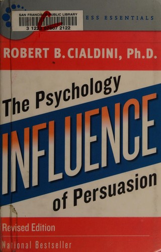

罗伯特·B·西奥迪尼（Robert B. Cialdini）是亚利桑那州立大学心理学与市场营销学荣休教授，社会影响力研究领域最具影响力的学者之一。《影响力》（Influence: The Psychology of Persuasion）于1984年首次出版，此后经过多次修订再版，全球累计销量超过五百万册，被翻译为四十多种语言。这本书的独特之处在于，西奥迪尼不仅依据严谨的学术实验，还花了三年时间深入汽车销售、房地产中介、电话募捐、广告公司等行业进行"卧底"式的田野观察，从而将说服术的学术原理与现实世界的实践案例紧密结合。
西奥迪尼在书中提炼出六大影响力原则。第一是"互惠"（Reciprocity）：人类对于接受了他人好处后回报的心理压力根深蒂固，商家赠送免费样品、慈善机构附赠小礼物，本质上都在利用这一原则。第二是"承诺与一致性"（Commitment and Consistency）：一旦人们做出了某种选择或表达了某种立场，就会面临来自内心和外部的压力去保持行为的一致性——这解释了为什么从小请求开始逐步升级的"登门槛"策略如此有效。第三是"社会认同"（Social Proof）：在不确定的情境下，人们倾向于观察他人的行为来决定自己的行动，广告中"最畅销产品""百万用户的选择"等话术正是对这一原则的运用。第四是"喜好"（Liking）：人们更容易被自己喜欢的人说服，而喜好可以通过外表吸引力、相似性、恭维和关联效应来建立。第五是"权威"（Authority）：人们对权威人物有着根深蒂固的服从倾向，米尔格拉姆的电击实验已经令人震惊地展示了这一点。第六是"稀缺"（Scarcity）：当某样东西变得稀缺或即将失去时，人们会赋予它更高的价值——"限量发售""最后机会"等营销手段利用的正是这种心理。
查理·芒格（Charlie Munger）对西奥迪尼的研究推崇备至。在芒格最著名的演讲之一——"人类误判心理学"（The Psychology of Human Misjudgment）中，他大量引用了西奥迪尼的研究成果，特别是互惠、社会认同和权威服从等原则。芒格曾亲自送给西奥迪尼一股伯克希尔·哈撒韦的A类股票（当时价值数万美元），据说正是用"互惠原则"来确保西奥迪尼会记住他。芒格在多个场合表示，理解影响力原则对于投资者至关重要，因为市场中的许多非理性行为——从众追涨、迷信权威分析师、被稀缺叙事驱动的投机——都可以用西奥迪尼的框架来解释。
《影响力》的持久价值在于它揭示了人类决策过程中那些自动化的、往往不被意识到的心理捷径。这些捷径在大多数情况下帮助我们高效地应对复杂世界，但也使我们容易被有意识地利用这些原则的人所操纵。对于投资者、企业管理者和任何需要做出重要决策的人来说，理解这六大原则不仅有助于识别他人的说服企图，更重要的是能够审视自己的决策过程中是否正在被这些心理机制所左右。正如西奥迪尼在书中所言，对抗操纵的最好武器，不是停止使用心理捷径——那在信息过载的时代既不可能也不可取——而是学会识别那些试图不当利用这些捷径的情境。